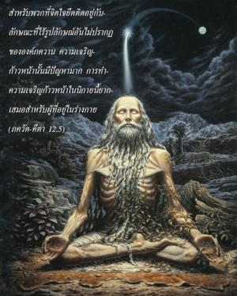
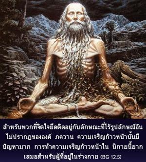

สำหรับพวกที่จิตใจยึดติดอยู่กับลักษณะที่ไร้รูปลักษณ์อันไม่ปรากฏขององค์ภควานฺ ความเจริญก้าวหน้านั้นมีปัญหามาก การทำความเจริญก้าวหน้าในนิกายนี้ยากเสมอสำหรับผู้ที่อยู่ในร่างกาย


กลุ่มนักทิพย์นิยมผู้ปฏิบัติตามวิถีทางที่มองไม่เห็น ไม่เป็นที่ปรากฏ ลักษณะไร้รูปลักษณ์ขององค์ภควานฺ เรียกว่า ชฺญาน-โยคี และบุคคลผู้อยู่ในกฺฤษฺณจิตสำนึกโดยสมบูรณ์ปฏิบัติการอุทิศตนเสียสละรับใช้ต่อองค์ภควานฺ เรียกว่า ภกฺติ-โยคี บัดนี้ข้อแตกต่างระหว่าง ชฺญาน-โยค และ ภกฺติ-โยค ได้อธิบายอย่างชัดเจน วิธีการของ ชฺญาน-โยค ถึงแม้ว่าในที่สุดจะนำมาถึงเป้าหมายเดียวกัน แต่มีปัญหามาก ขณะที่วิถีทางของ ภกฺติ-โยค วิธีการรับใช้บุคลิกภาพสูงสุดแห่งพระเจ้าโดยตรงง่ายกว่า และเป็นธรรมชาติสำหรับวิญญาณที่อยู่ในร่างกาย ปัจเจกวิญญาณอยู่ภายในร่างกายตั้งแต่สมัยดึกดำบรรพ์ จึงเป็นสิ่งยากมากที่จะให้เข้าใจเพียงแค่ทฤษฎีว่าตัวเขาไม่ใช่ร่างกาย ดังนั้น ภกฺติ-โยค ยอมรับพระปฏิมาขององค์กฺฤษฺณเป็นที่สักการบูชา เพราะมีแนวความคิดทางร่างกายบางอย่างตั้งมั่นอยู่ในจิตใจซึ่งนำมาปฏิบัติได้ แน่นอนว่าการบูชาบุคลิกภาพสูงสุดแห่งพระเจ้าในรูปลักษณ์ของพระองค์ภายในวัดไม่ใช่เป็นการบูชารูปปั้น มีหลักฐานในวรรณกรรมพระเวทว่า การบูชาอาจเป็น สคุณ องค์ภควานฺผู้ครอบครอง และ นิรฺคุณ องค์ภควานฺในลักษณะไม่ครอบครอง การบูชาพระปฏิมาในวัดเป็นการบูชา สคุณ เพราะว่าองค์ภควานฺมีลักษณะทางวัตถุเป็นผู้แทน แต่รูปลักษณ์ขององค์ภควานฺถึงแม้ว่ามีลักษณะทางวัตถุเป็นผู้แทน เช่น หิน ไม้ หรือภาพวาดสีน้ำมัน อันที่จริงไม่ใช่วัตถุ นั่นคือธรรมชาติอันสมบูรณ์บริบูรณ์ขององค์ภควานฺ
ตัวอย่างง่ายๆ ให้ไว้ ณ ที่นี้คือ เราอาจพบตู้ไปรษณีย์ริมถนน หากเราหย่อนซองจดหมายลงไปในตู้ไปรษณีย์เหล่านั้น โดยธรรมชาติแล้วจดหมายจะไปถึงจุดหมายปลายทางโดยไม่ยากลำบาก แต่หากเป็นตู้เก่า หรือตู้ไปรษณีย์ปลอม ที่เราอาจพบซึ่งกรมไปรษณีย์ไม่รับรอง การส่งจดหมายนี้จะไม่ประสบผลสำเร็จ ในทำนองเดียวกัน องค์ภควานฺทรงมีผู้แทนที่รับรองได้ในรูปลักษณ์พระปฏิมา เรียกว่า อรฺจา-วิคฺรห อรฺจา-วิคฺรห นี้เป็นอวตารขององค์ภควานฺพระองค์จะทรงรับการรับใช้ผ่านรูปลักษณ์นั้น องค์ภควานฺผู้ทรงเดชมีพลังทั้งหมด ฉะนั้น อวตารในรูป อรฺจา-วิคฺรห ทรงสามารถรับการรับใช้ของสาวก เพื่ออำนวยความสะดวกแก่มนุษย์ในชีวิตที่อยู่ในสภาวะ
ดังนั้น สำหรับสาวกจะไม่มีความยากลำบากในการเข้าถึงองค์ภควานฺโดยตรง และรวดเร็ว แต่สำหรับพวกที่ปฏิบัติตามวิธีที่ไร้รูปลักษณ์เพื่อความรู้แจ้งทิพย์ วิถีทางนั้นยาก เพราะต้องทำความเข้าใจกับผู้แทนที่ไม่ปรากฏของพระองค์ผ่านทางวรรณกรรมพระเวท เช่น อุปนิษทฺ และต้องเรียนภาษา ต้องเข้าใจความรู้สึกที่มองไม่เห็น และต้องรู้แจ้งถึงวิธีกรรมทั้งหลายเหล่านี้ ซึ่งไม่ใช่เรื่องที่ง่ายสำหรับมนุษย์ธรรมดา บุคคลในกฺฤษฺณจิตสำนึกปฏิบัติการอุทิศตนเสียสละรับใช้จากการชี้นำของพระอาจารย์ทิพย์ผู้ที่เชื่อถือได้ ถวายความเคารพต่อพระปฏิมาสม่ำเสมอ สดับฟังพระบารมีขององค์ภควานฺ และรับประทานอาหารส่วนที่เหลือหลังจากถวายให้พระองค์แล้ว เพียงแต่ทำสิ่งเหล่านี้ผู้นั้นจะสามารถรู้แจ้งถึงบุคลิกภาพสูงสุดแห่งพระเจ้าโดยง่ายดาย พวกไม่เชื่อในรูปลักษณ์รับเอาวิธีปฏิบัติที่มีปัญหาด้วยความเสี่ยงที่จะไม่รู้แจ้งถึงสัจธรรมในบั้นปลายโดยไม่ต้องสงสัย แต่ผู้ที่เชื่อในรูปลักษณ์โดยปราศจากความเสี่ยง ปัญหา หรือความยากลำบากจะเข้าถึงบุคลิกภาพสูงสุดแห่งพระเจ้าโดยตรง มีข้อความในทำนองเดียวกันนี้ปรากฏใน ศฺรีมทฺ-ภาควตมฺ ว่า หากผู้ใดในที่สุดต้องศิโรราบต่อบุคลิกภาพสูงสุดแห่งพระเจ้า (วิธีการศิโรราบนี้ เรียกว่า ภกฺติ ) แต่ไปรับเอาความยากลำบากในการเข้าใจว่าอะไรคือ พฺรหฺมนฺ และอะไรไม่ใช่ พฺรหฺมนฺ และได้ใช้เวลาของตนตลอดชีวิตปฏิบัติเช่นนี้ผลที่ได้ก็มีแต่ปัญหา ฉะนั้น จึงแนะนำไว้ ณ ที่นี้ว่าเราไม่ควรรับเอาวิถีทางเพื่อการรู้แจ้งแห่งตนที่เป็นปัญหา เพราะว่าผลขั้นสุดท้ายจะไม่แน่นอน
สิ่งมีชีวิตเป็นปัจเจกวิญญาณชั่วกัลปวสานหากปรารถนาจะกลืนเข้าไปในส่วนทิพย์ เขาอาจบรรลุถึงความรู้แจ้งแง่มุมของความเป็นอมตะ และความรู้ในธรรมชาติเดิมแท้ของตน แต่ส่วนที่เป็นความปลื้มปีติสุขจะไม่สามารถรู้แจ้ง ด้วยพระกรุณาธิคุณของสาวกบางรูปทำให้นักทิพย์นิยมผู้มีความรู้สูงในวิธีของ ชฺญาน-โยค นี้อาจมาถึงจุดแห่ง ภกฺติ-โยค หรือการอุทิศตนเสียสละรับใช้ เมื่อถึงเวลานั้นการฝึกปฏิบัติตามลัทธิไร้รูปลักษณ์เป็นเวลายาวนานจะกลายมาเป็นปัญหา เพราะไม่สามารถยกเลิกความคิดนั้นได้ ดังนั้น วิญญาณผู้อยู่ในร่างจะมีความยากลำบากกับสิ่งที่ไม่ปรากฏทั้งในขณะที่ปฏิบัติและในขณะที่รู้แจ้ง ทุกดวงวิญญาณมีเสรีภาพบางส่วน และควรรู้อย่างแน่ชัดว่าความรู้แจ้งที่ไม่เป็นที่ปรากฏนี้ฝืนต่อธรรมชาติของตนเอง ซึ่งเป็นทิพย์ และมีความปลื้มปีติสุขจึงไม่ควรปฏิบัติตามวิธีนี้ สำหรับทุกๆ ปัจเจกชีวิตวิธีแห่งกฺฤษฺณจิตสำนึกจะนำมาซึ่งการปฏิบัติอุทิศตนเสียสละรับใช้อย่างสมบูรณ์ จึงเป็นวิธีที่ดีที่สุด หากละเลยการอุทิศตนเสียสละรับใช้นี้จะเป็นอันตรายในการกลับไปสู่ลัทธิที่ไม่เชื่อในองค์ภควานฺ ดังนั้น วิธีที่มุ่งความตั้งใจไปยังสิ่งที่ไม่เป็นที่ปรากฏ ไม่สามารถมองเห็นได้ อยู่เหนือการเข้าถึงของประสาทสัมผัสได้แสดงไว้ในโศลกนี้ว่า ไม่ควรได้รับการส่งเสริมไม่ว่าในเวลาใดโดยเฉพาะในยุคนี้ซึ่งองค์ศฺรีกฺฤษฺณทรงไม่แนะนำ